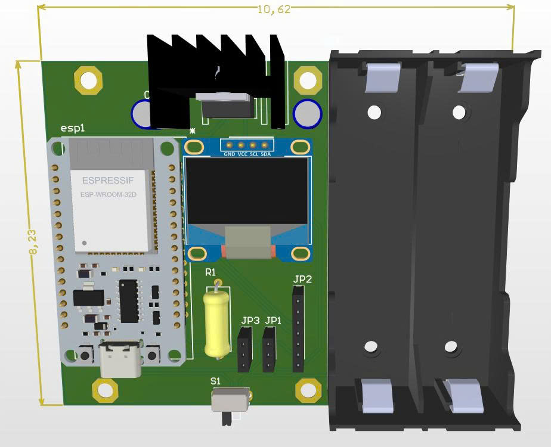
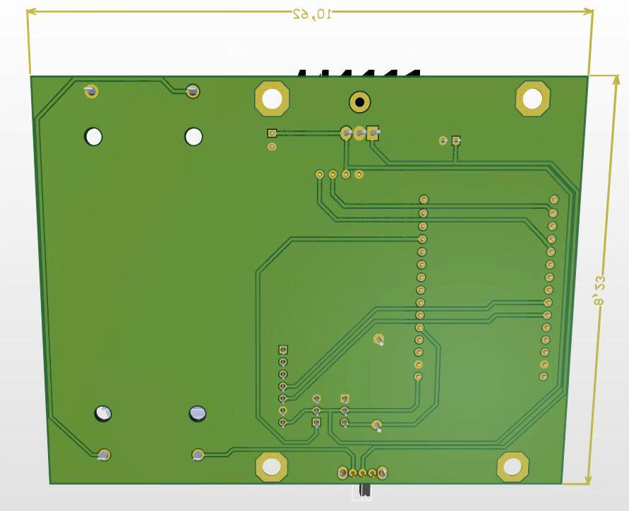

ESP32 | IoT Technology
This system is built around the ESP32 to create a low-cost, real-time water quality monitoring system. Data is collected from the sensors and sent to the server to be displayed on the web dashboard. The system can be easily expanded and applied in various scenarios like drinking water quality monitoring, aquaculture, and environmental monitoring

3D Layout Mode (Forward)

3D Layout Mode (Backward)
Sensor → ESP32 → Server → MongoDB → Web Dashboard
1. The ESP32 initializes the sensors and the OLED display. 2. It periodically reads data from the TDS sensor and DS18B20. 3. The system calculates the TDS value, compensates for temperature, and displays the data on the OLED screen. 4. Data is sent to ThingSpeak using the ESP32’s Wi-Fi capabilities for cloud monitoring.
This allows users to remotely monitor the water quality and ensure that it meets the required standards. The system operates in real-time, not only with fast and stable data updates, but also affordable and effective solution for monitoring water quality.